Ethereum has blobs. Where do we go from here?
2024 Mar 28
See all posts
Ethereum has blobs. Where do we go from here?
On March 13, the Dencun hard fork activated, enabling one of the long-awaited features of Ethereum: proto-danksharding (aka EIP-4844, aka blobs). Initially, the fork reduced the transaction fees of rollups by a factor of over 100, as blobs were nearly free. In the last day, we finally saw blobs spike up in volume and the fee market activate as the blobscriptions protocol started to use them. Blobs are not free, but they remain much cheaper than calldata.

Left: blob usage finally spiking up to the 3-per-block target thanks to Blobscriptions. RIght: blob fees "entering price discovery mode" as a result. Source: https://dune.com/0xRob/blobs.
This milestone represents a key transition in Ethereum's long-term roadmap: blobs are the moment where Ethereum scaling ceased to be a "zero-to-one" problem, and became a "one-to-N" problem. From here, important scaling work, both in increasing blob count and in improving rollups' ability to make the best use of each blob, will continue to take place, but it will be more incremental. The scaling-related changes to the fundamental paradigm of how Ethereum as an ecosystem operates are increasingly already behind us. Additionally, emphasis is already slowly shifting, and will continue to slowly shift, from L1 problems such as PoS and scaling, to problems closer to the application layer. The key question that this post will cover is: where does Ethereum go from here?
The future of Ethereum scaling
Over the last few years, we have seen Ethereum slowly shift over to becoming an L2-centric ecosystem. Major applications have started to move over from L1 to L2, payments are starting to be L2-based by default, and wallets are starting to build their user experience around the new multi-L2 environment.
From the very beginning, a key piece of the rollup-centric roadmap was the idea of separate data availability space: a special section of space in a block, which the EVM would not have access to, that could hold data for layer-2 projects such as rollups. Because this data space is not EVM-accessible, it can be broadcasted separately from a block and verified separately from a block. Eventually, it can be verified with a technology called data availability sampling, which allows each node to verify that the data was correctly published by only randomly checking a few small samples. Once this is implemented, the blob space could be greatly expanded; the eventual goal is 16 MB per slot (~1.33 MB per second).

Data availability sampling: each node only needs to download a small portion of the data to verify the availability of the whole thing.
EIP-4844 (aka "blobs") does not give us data availability sampling. But it does set up the basic scaffolding in such a way that from here on, data availability sampling can be introduced and blob count can be increased behind the scenes, all without any involvement from users or applications. In fact, the only "hard fork" required is a simple parameter change.
There are two strands of development that will need to continue from here:
- Progressively increasing blob capacity, eventually bringing to life the full vision of data availability sampling with 16 MB per slot of data space
- Improving L2s to make better use of the data space that we have
Bringing DAS to life
The next stage is likely to be a simplified version of DAS called PeerDAS. In PeerDAS, each node stores a significant fraction (eg. 1/8) of all blob data, and nodes maintain connections to many peers in the p2p network. When a node needs to sample for a particular piece of data, it asks one of the peers that it knows is responsible for storing that piece.
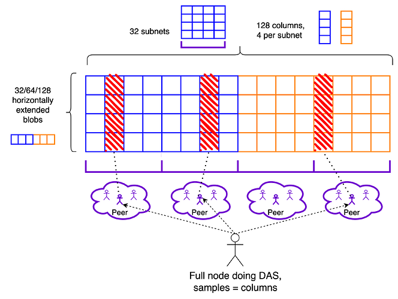
If each node needs to download and store 1/8 of all data, then PeerDAS lets us theoretically scale blobs by 8x (well, actually 4x, because we lose 2x to the redundancy of erasure coding). PeerDAS can be rolled out over time: we can have a stage where professional stakers continue downloading full blobs, and solo stakers only download 1/8 of the data.
In addition to this, EIP-7623 (or alternatives such as 2D pricing) can be used to put stricter bounds on the maximum size of an execution block (ie. the "regular transactions" in a block), which makes it safer to increase both the blob target and the L1 gas limit. In the longer term, more complicated 2D DAS protocols will let us go all the way and increase blob space further.
Improving L2s
There are four key places in which layer 2 protocols today can improve.
1. Using bytes more efficiently with data compression
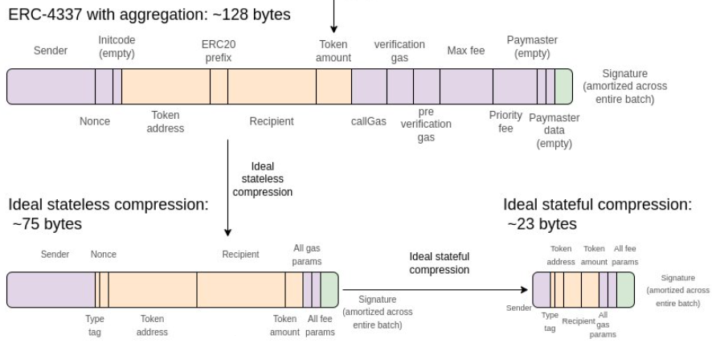
My outline-in-a-picture of data compression continues to be available here;
Naively, a transaction takes up around 180 bytes of data. However, there are a series of compression techniques that can be used to bring this size down over several stages; with optimal compression we could potentially go all the way down to under 25 bytes per transaction.
2. Optimistic data techniques that secure L2s by only using the L1 in exceptional situations

Plasma is a category of techniques that allows you to get rollup-equivalent security for some applications while keeping data on L2 in the normal case. For EVMs, plasma can't protect all coins. But Plasma-inspired constructions can protect most coins. And constructions much simpler than Plasma can improve greatly on the validiums of today. L2s that are not willing to put all of their data on-chain should explore such techniques.
3. Continue improving on execution-related constraints
Once the Dencun hard fork activated, making rollups set up to use the blobs that it introduced 100x cheaper. usage on the Base rollup spiked up immediately:
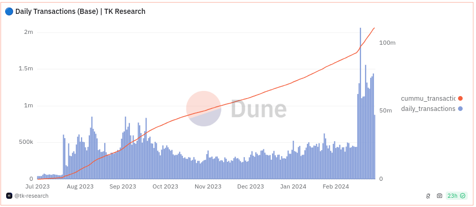
This in turn led to Base hitting its own internal gas limit, causing fees to unexpectedly surge. This has led to a more widespread realization that Ethereum data space is not the only thing that needs to be scaled: rollups need to be scaled internally as well.
Part of this is parallelization; rollups could implement something like EIP-648. But just as important is storage, and interaction effects between compute and storage. This is an important engineering challenge for rollups.
4. Continue improving security
We are still far from a world where rollups are truly protected by code. In fact, according to l2beat only these five, of which only Arbitrum is full-EVM, have even reached what I have called "stage 1".
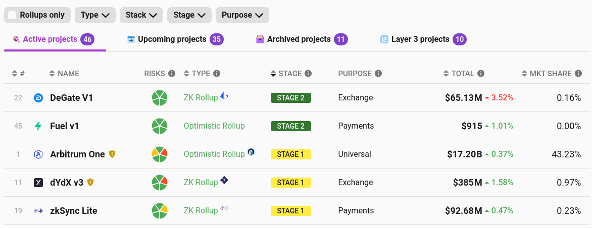
This needs to be tackled head-on. While we are not currently at the point where we can be confident enough in the complex code of an optimistic or SNARK-based EVM verifier, we are absolutely at the point where we can go halfway there, and have security councils that can revert the behavior of the code only with a high threshold (eg. I proposed 6-of-8; Arbitrum is doing 9-of-12).
The ecosystem's standards need to become stricter: so far, we have been lenient and accepted any project as long as it claims to be "on a path to decentralization". By the end of the year, I think our standards should increase and we should only treat a project as a rollup if it has actually reached at least stage 1.
After this, we can cautiously move toward stage 2: a world where rollups truly are backed by code, and a security council can only intervene if the code "provably disagrees with itself" (eg. accepts two incompatible state roots, or two different implementations give different answers). One path toward doing this safely is to use multiple prover implementations.
What does this mean for Ethereum development more broadly?
In a presentation at ETHCC in summer 2022, I made a presentation describing the current state of Ethereum development as an S-curve: we are entering a period of very rapid transition, and after that rapid transition, development will once again slow down as the L1 solidifies and development re-focuses on the user and application layer.
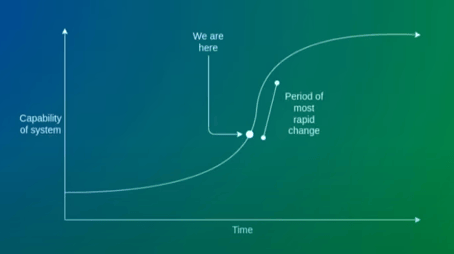
Today, I would argue that we are decidedly on the decelerating, right side of this S-curve. As of two weeks ago, the two largest changes to the Ethereum blockchain - the switch to proof of stake, and the re-architecting to blobs - are behind us. Further changes are still significant (eg. Verkle trees, single-slot finality, in-protocol account abstraction), but they are not drastic to the same extent that proof of stake and sharding are. In 2022, Ethereum was like a plane replacing its engines mid-flight. In 2023, it was replacing its wings. The Verkle tree transition is the main remaining truly significant one (and we already have testnets for that); the others are more like replacing a tail fin.
The goal of EIP-4844 was to make a single large one-time change, in order to set rollups up for long-term stability. Now that blobs are out, a future upgrade to full danksharding with 16 MB blobs, and even switching the cryptography over to STARKs over a 64-bit goldilocks field, can happen without requiring any further action from rollups and users. It also reinforces an important precedent: that the Ethereum development process executes according to a long-existing well-understood roadmap, and applications (including L2s) that are built with "the new Ethereum" in mind get an environment that is stable for the long term.
What does this mean for applications and users?
The first ten years of Ethereum have largely been a training stage: the goal has been to get the Ethereum L1 off the ground, and applications have largely been happening within a small cohort of enthusiasts. Many have argued that the lack of large-scale applications for the past ten years proves that crypto is useless. I have always argued against this: pretty much every crypto application that is not financial speculation depends on low fees - and so while we have high fees, we should not be surprised that we mainly see financial speculation!
Now that we have blobs, this key constraint that has been holding us back all this time is starting to melt away. Fees are finally much lower; my statement from seven years ago that the internet of money should not cost more than five cents per transaction is finally coming true. We are not entirely out of the woods: fees may still increase if usage grows too quickly, and we need to continue working hard to scale blobs (and separately scale rollups) further over the next few years. But we are seeing the light at the end of the... err..... dark forest.
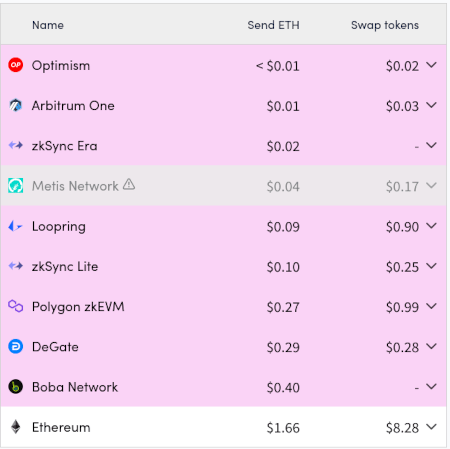
What this means to developers is simple: we no longer have any excuse. Up until a couple of years ago, we were setting ourselves a low standard, building applications that were clearly not usable at scale, as long as they worked as prototypes and were reasonably decentralized. Today, we have all the tools we'll need, and indeed most of the tools we'll ever have, to build applications that are simultaneously cypherpunk and user-friendly. And so we should go out and do it.
Many are rising to the challenge. The Daimo wallet is explicitly describing itself as Venmo on Ethereum, aiming to combine Venmo's convenience with Ethereum's decentralization. In the decentralized social sphere, Farcaster is doing a good job of combining genuine decentralization (eg. see this guide on how to build your own alternative client) with excellent user experience. Unlike the previous hype waves of "social fi", the average Farcaster user is not there to gamble - passing the key test for a crypto application to truly be sustainable.
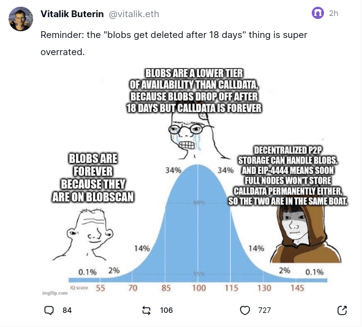
This post was sent on the main Farcaster client, Warpcast, and this screenshot was taken from the alternative Farcaster + Lens client Firefly.
These are successes that we need to build on, and expand to other application spheres, including identity, reputation and governance.
Applications built or maintained today should be designed with 2020s Ethereum in mind
The Ethereum ecosystem still has a large number of applications that operate around a fundamentally "2010s Ethereum" workflow. Most ENS activity is still on layer 1. Most token issuance happens on layer 1, without serious consideration to making sure that bridged tokens on layer 2s are available (eg. see this fan of the ZELENSKYY memecoin appreciating the coin's ongoing donations to Ukraine but complaining that L1 fees make it too expensive). In addition to scalability, we are also behind on privacy: POAPs are all publicly on-chain, probably the right choice for some use cases but very suboptimal for others. Most DAOs, and Gitcoin Grants, still use fully transparent on-chain voting, making them highly vulnerable to bribery (including retroactive airdrops), and this has been shown to heavily distort contribution patterns. Today, ZK-SNARKs have existed for years, and yet many applications still have not even started to properly use them.
These are all hard-working teams that have to handle large existing user bases, and so I do not fault them for not simultaneously upgrading to the latest wave of technology. But soon, this upgrading needs to happen. Here are some key differences between "a fundamentally 2010s Ethereum workflow" and "a fundamentally 2020s Ethereum workflow":
| Architecture |
Build everything on L1 |
Build on a specific L2, or architect the application so that it supports every L2 that follows some standards |
| Privacy |
Everything public |
A user's data is private by default, users merkle-prove or ZK-prove specific claims as needed to establish trust |
| Anti-sybil |
You must have 0.01 ETH |
Application can require an ETH deposit, but clients should offer wrappers for non-crypto users that provide "centralized anti-sybil" (eg. SMS) |
| Wallets |
EOAs |
Account abstraction wallets: key recovery, different access control for different security levels, sponsored txs... |
| Proof of community membership (for voting, airdrops...) |
Based on how much ETH you have |
ETH + proof of personhood + POAPs + ZuStamps + EAS + third party curated lists (eg. Starknet's solo staker list) |
Basically, Ethereum is no longer just a financial ecosystem. It's a full-stack replacement for large parts of "centralized tech", and even provides some things that centralized tech does not (eg. governance-related applications). And we need to build with this broader ecosystem in mind.
Conclusions
- Ethereum is in the process of a decisive shift from a "very rapid L1 progress" era to an era where L1 progress will be still very significant, but somewhat more mellow, and less disruptive to applications.
- We still need to finish scaling. This work will be more in-the-background, but it remains important.
- Application developers are no longer building prototypes; we are building tools for many millions of people to use. Across the ecosystem, we need to fully readjust mindsets accordingly.
- Ethereum has upgraded from being "just" a financial ecosystem into a much more thorough independent decentralized tech stack. Across the ecosystem, we need to fully readjust mindsets accordingly to this too.
Ethereum has blobs. Where do we go from here?
2024 Mar 28 See all postsOn March 13, the Dencun hard fork activated, enabling one of the long-awaited features of Ethereum: proto-danksharding (aka EIP-4844, aka blobs). Initially, the fork reduced the transaction fees of rollups by a factor of over 100, as blobs were nearly free. In the last day, we finally saw blobs spike up in volume and the fee market activate as the blobscriptions protocol started to use them. Blobs are not free, but they remain much cheaper than calldata.
Left: blob usage finally spiking up to the 3-per-block target thanks to Blobscriptions. RIght: blob fees "entering price discovery mode" as a result. Source: https://dune.com/0xRob/blobs.
This milestone represents a key transition in Ethereum's long-term roadmap: blobs are the moment where Ethereum scaling ceased to be a "zero-to-one" problem, and became a "one-to-N" problem. From here, important scaling work, both in increasing blob count and in improving rollups' ability to make the best use of each blob, will continue to take place, but it will be more incremental. The scaling-related changes to the fundamental paradigm of how Ethereum as an ecosystem operates are increasingly already behind us. Additionally, emphasis is already slowly shifting, and will continue to slowly shift, from L1 problems such as PoS and scaling, to problems closer to the application layer. The key question that this post will cover is: where does Ethereum go from here?
The future of Ethereum scaling
Over the last few years, we have seen Ethereum slowly shift over to becoming an L2-centric ecosystem. Major applications have started to move over from L1 to L2, payments are starting to be L2-based by default, and wallets are starting to build their user experience around the new multi-L2 environment.
From the very beginning, a key piece of the rollup-centric roadmap was the idea of separate data availability space: a special section of space in a block, which the EVM would not have access to, that could hold data for layer-2 projects such as rollups. Because this data space is not EVM-accessible, it can be broadcasted separately from a block and verified separately from a block. Eventually, it can be verified with a technology called data availability sampling, which allows each node to verify that the data was correctly published by only randomly checking a few small samples. Once this is implemented, the blob space could be greatly expanded; the eventual goal is 16 MB per slot (~1.33 MB per second).
Data availability sampling: each node only needs to download a small portion of the data to verify the availability of the whole thing.
EIP-4844 (aka "blobs") does not give us data availability sampling. But it does set up the basic scaffolding in such a way that from here on, data availability sampling can be introduced and blob count can be increased behind the scenes, all without any involvement from users or applications. In fact, the only "hard fork" required is a simple parameter change.
There are two strands of development that will need to continue from here:
Bringing DAS to life
The next stage is likely to be a simplified version of DAS called PeerDAS. In PeerDAS, each node stores a significant fraction (eg. 1/8) of all blob data, and nodes maintain connections to many peers in the p2p network. When a node needs to sample for a particular piece of data, it asks one of the peers that it knows is responsible for storing that piece.
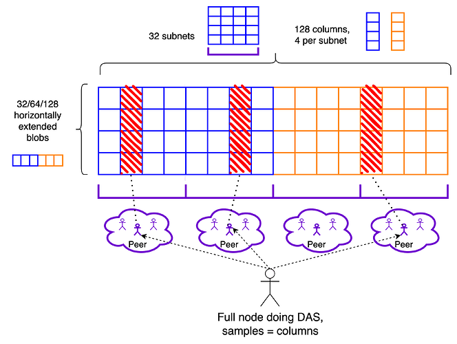
If each node needs to download and store 1/8 of all data, then PeerDAS lets us theoretically scale blobs by 8x (well, actually 4x, because we lose 2x to the redundancy of erasure coding). PeerDAS can be rolled out over time: we can have a stage where professional stakers continue downloading full blobs, and solo stakers only download 1/8 of the data.
In addition to this, EIP-7623 (or alternatives such as 2D pricing) can be used to put stricter bounds on the maximum size of an execution block (ie. the "regular transactions" in a block), which makes it safer to increase both the blob target and the L1 gas limit. In the longer term, more complicated 2D DAS protocols will let us go all the way and increase blob space further.
Improving L2s
There are four key places in which layer 2 protocols today can improve.
1. Using bytes more efficiently with data compression
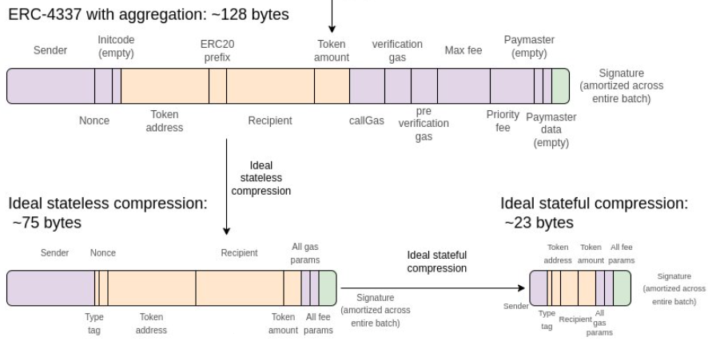
My outline-in-a-picture of data compression continues to be available here;
Naively, a transaction takes up around 180 bytes of data. However, there are a series of compression techniques that can be used to bring this size down over several stages; with optimal compression we could potentially go all the way down to under 25 bytes per transaction.
2. Optimistic data techniques that secure L2s by only using the L1 in exceptional situations
Plasma is a category of techniques that allows you to get rollup-equivalent security for some applications while keeping data on L2 in the normal case. For EVMs, plasma can't protect all coins. But Plasma-inspired constructions can protect most coins. And constructions much simpler than Plasma can improve greatly on the validiums of today. L2s that are not willing to put all of their data on-chain should explore such techniques.
3. Continue improving on execution-related constraints
Once the Dencun hard fork activated, making rollups set up to use the blobs that it introduced 100x cheaper. usage on the Base rollup spiked up immediately:
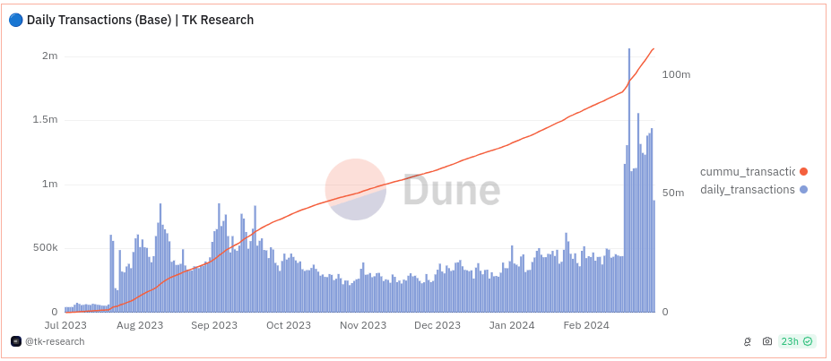
This in turn led to Base hitting its own internal gas limit, causing fees to unexpectedly surge. This has led to a more widespread realization that Ethereum data space is not the only thing that needs to be scaled: rollups need to be scaled internally as well.
Part of this is parallelization; rollups could implement something like EIP-648. But just as important is storage, and interaction effects between compute and storage. This is an important engineering challenge for rollups.
4. Continue improving security
We are still far from a world where rollups are truly protected by code. In fact, according to l2beat only these five, of which only Arbitrum is full-EVM, have even reached what I have called "stage 1".
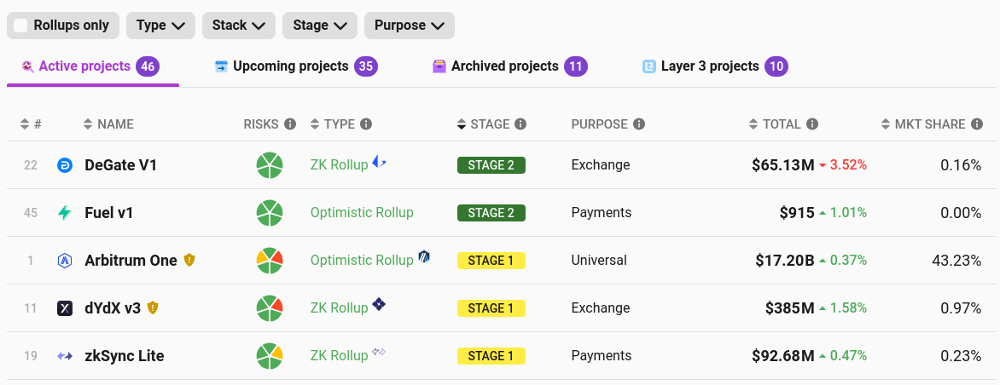
This needs to be tackled head-on. While we are not currently at the point where we can be confident enough in the complex code of an optimistic or SNARK-based EVM verifier, we are absolutely at the point where we can go halfway there, and have security councils that can revert the behavior of the code only with a high threshold (eg. I proposed 6-of-8; Arbitrum is doing 9-of-12).
The ecosystem's standards need to become stricter: so far, we have been lenient and accepted any project as long as it claims to be "on a path to decentralization". By the end of the year, I think our standards should increase and we should only treat a project as a rollup if it has actually reached at least stage 1.
After this, we can cautiously move toward stage 2: a world where rollups truly are backed by code, and a security council can only intervene if the code "provably disagrees with itself" (eg. accepts two incompatible state roots, or two different implementations give different answers). One path toward doing this safely is to use multiple prover implementations.
What does this mean for Ethereum development more broadly?
In a presentation at ETHCC in summer 2022, I made a presentation describing the current state of Ethereum development as an S-curve: we are entering a period of very rapid transition, and after that rapid transition, development will once again slow down as the L1 solidifies and development re-focuses on the user and application layer.
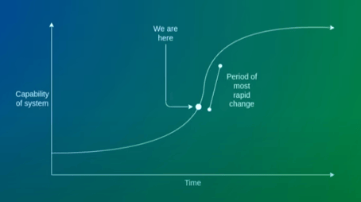
Today, I would argue that we are decidedly on the decelerating, right side of this S-curve. As of two weeks ago, the two largest changes to the Ethereum blockchain - the switch to proof of stake, and the re-architecting to blobs - are behind us. Further changes are still significant (eg. Verkle trees, single-slot finality, in-protocol account abstraction), but they are not drastic to the same extent that proof of stake and sharding are. In 2022, Ethereum was like a plane replacing its engines mid-flight. In 2023, it was replacing its wings. The Verkle tree transition is the main remaining truly significant one (and we already have testnets for that); the others are more like replacing a tail fin.
The goal of EIP-4844 was to make a single large one-time change, in order to set rollups up for long-term stability. Now that blobs are out, a future upgrade to full danksharding with 16 MB blobs, and even switching the cryptography over to STARKs over a 64-bit goldilocks field, can happen without requiring any further action from rollups and users. It also reinforces an important precedent: that the Ethereum development process executes according to a long-existing well-understood roadmap, and applications (including L2s) that are built with "the new Ethereum" in mind get an environment that is stable for the long term.
What does this mean for applications and users?
The first ten years of Ethereum have largely been a training stage: the goal has been to get the Ethereum L1 off the ground, and applications have largely been happening within a small cohort of enthusiasts. Many have argued that the lack of large-scale applications for the past ten years proves that crypto is useless. I have always argued against this: pretty much every crypto application that is not financial speculation depends on low fees - and so while we have high fees, we should not be surprised that we mainly see financial speculation!
Now that we have blobs, this key constraint that has been holding us back all this time is starting to melt away. Fees are finally much lower; my statement from seven years ago that the internet of money should not cost more than five cents per transaction is finally coming true. We are not entirely out of the woods: fees may still increase if usage grows too quickly, and we need to continue working hard to scale blobs (and separately scale rollups) further over the next few years. But we are seeing the light at the end of the... err..... dark forest.
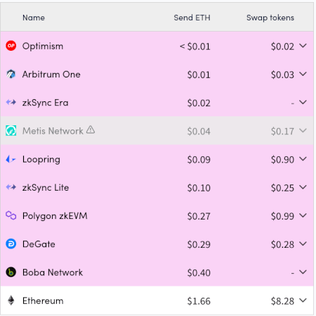
What this means to developers is simple: we no longer have any excuse. Up until a couple of years ago, we were setting ourselves a low standard, building applications that were clearly not usable at scale, as long as they worked as prototypes and were reasonably decentralized. Today, we have all the tools we'll need, and indeed most of the tools we'll ever have, to build applications that are simultaneously cypherpunk and user-friendly. And so we should go out and do it.
Many are rising to the challenge. The Daimo wallet is explicitly describing itself as Venmo on Ethereum, aiming to combine Venmo's convenience with Ethereum's decentralization. In the decentralized social sphere, Farcaster is doing a good job of combining genuine decentralization (eg. see this guide on how to build your own alternative client) with excellent user experience. Unlike the previous hype waves of "social fi", the average Farcaster user is not there to gamble - passing the key test for a crypto application to truly be sustainable.
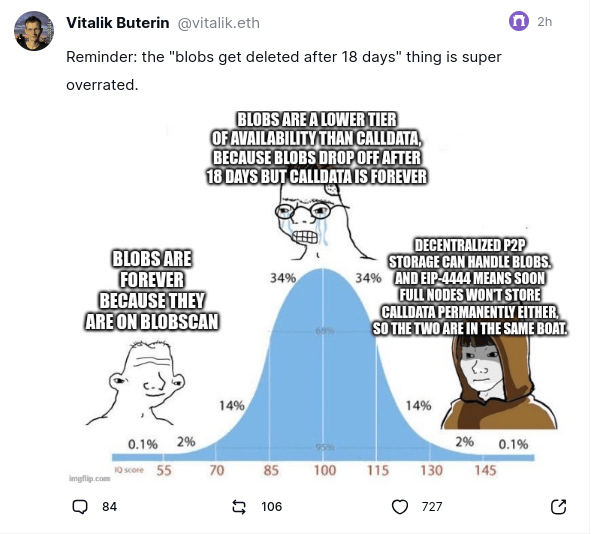
This post was sent on the main Farcaster client, Warpcast, and this screenshot was taken from the alternative Farcaster + Lens client Firefly.
These are successes that we need to build on, and expand to other application spheres, including identity, reputation and governance.
Applications built or maintained today should be designed with 2020s Ethereum in mind
The Ethereum ecosystem still has a large number of applications that operate around a fundamentally "2010s Ethereum" workflow. Most ENS activity is still on layer 1. Most token issuance happens on layer 1, without serious consideration to making sure that bridged tokens on layer 2s are available (eg. see this fan of the ZELENSKYY memecoin appreciating the coin's ongoing donations to Ukraine but complaining that L1 fees make it too expensive). In addition to scalability, we are also behind on privacy: POAPs are all publicly on-chain, probably the right choice for some use cases but very suboptimal for others. Most DAOs, and Gitcoin Grants, still use fully transparent on-chain voting, making them highly vulnerable to bribery (including retroactive airdrops), and this has been shown to heavily distort contribution patterns. Today, ZK-SNARKs have existed for years, and yet many applications still have not even started to properly use them.
These are all hard-working teams that have to handle large existing user bases, and so I do not fault them for not simultaneously upgrading to the latest wave of technology. But soon, this upgrading needs to happen. Here are some key differences between "a fundamentally 2010s Ethereum workflow" and "a fundamentally 2020s Ethereum workflow":
Basically, Ethereum is no longer just a financial ecosystem. It's a full-stack replacement for large parts of "centralized tech", and even provides some things that centralized tech does not (eg. governance-related applications). And we need to build with this broader ecosystem in mind.
Conclusions